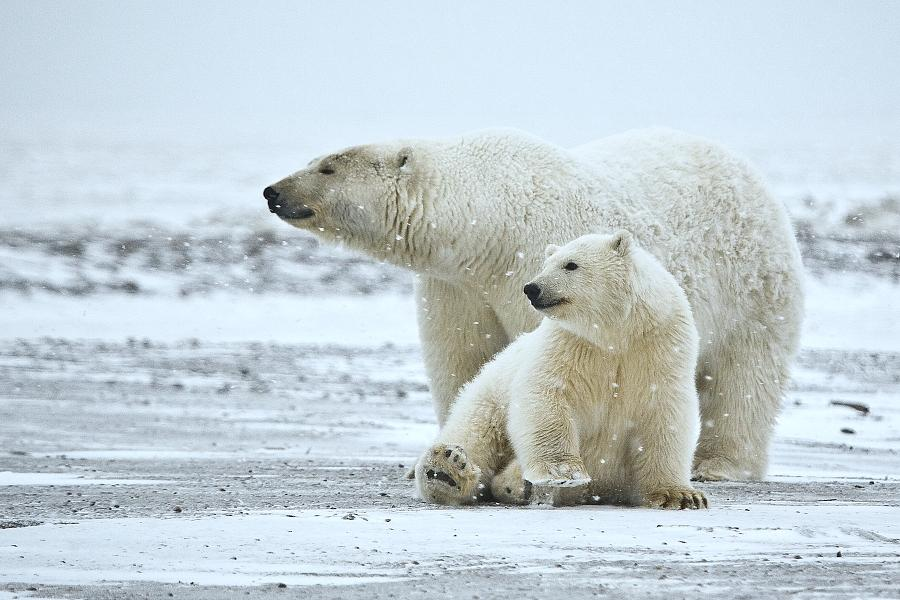
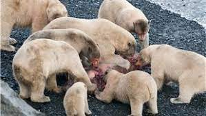
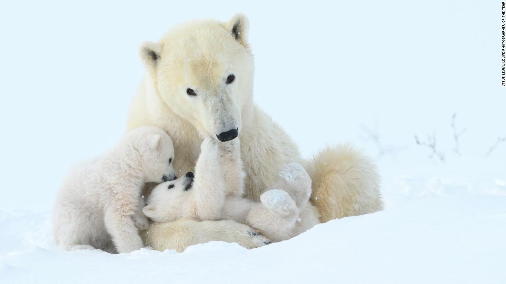
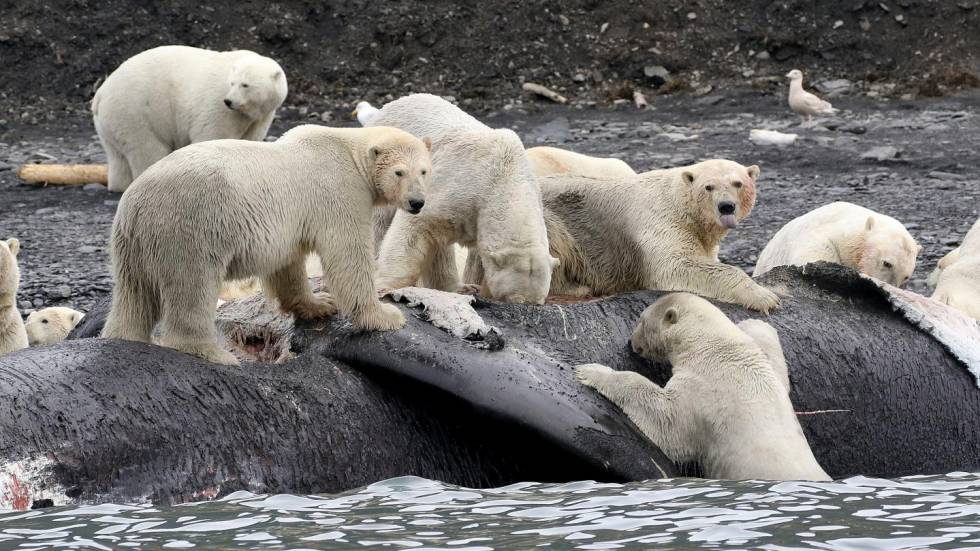

¿Por qué el oso polar está en serio peligro de extinción?
Debido al calentamiento global, esta especie está en peligro de extinción y algunos científicos consideran que su desaparición es algo inevitable que ocurrirá en los próximos años.

Con su pelaje blanco y frondoso, garras largas y un peso promedio de media tonelada, el oso polar es uno de los habitantes más icónicos del Ártico, ya que se trata del único superdepredador de esta región del mundo.
-Los osos polares se están volviendo caníbales por el cambio climático

Debido al calentamiento global, esta especie está en peligro de extinción y algunos científicos consideran que su desaparición es algo inevitable que ocurrirá en los próximos años, así lo recoge el portal muyinteresante.com.
Un estudio publicado a finales de julio de 2020 en la revista especializada Nature Climate Change realizó una estimación realista del tiempo que le queda al oso polar antes de extinguirse debido a los efectos del cambio climático.
El principal factor que pone en peligro de extinción al oso polar es la destrucción de su hábitat provocada por el deshielo del Ártico, es decir, la disminución gradual del hielo marino ártico durante el verano y el derretimiento sostenido de la capa superficial de hielo de Groenlandia. Incluso si el calentamiento se limitara a 2.4°C con relación a la era preindustrial, eso “no garantizaría salvar a los osos polares a largo plazo”, explica el estudio.

Las focas (principales presas de esta especie) evitan las regiones más calientes del Ártico, aumentando la tasa de desnutrición de los osos polares. En casos extremos pueden morir de hambre tras recorrer decenas de kilómetros durante meses sin encontrar comida.
La evidencia para señalar la actividad humana como principal causante del deshielo es numerosa, especialmente si se considera que el deshielo del Ártico comenzó a acelerarse desde 1800, coincidiendo con la Revolución Industrial.
La investigación concluyó que en caso de que las emisiones de gases de efecto invernadero se mantengan constantes, las condiciones para los osos polares serán cada vez más difíciles y en caso de un inminente deshielo del Ártico, la caída en la tasa de reproducción y de supervivencia de esta especie provocaría su extinción antes del año 2100. (I)
